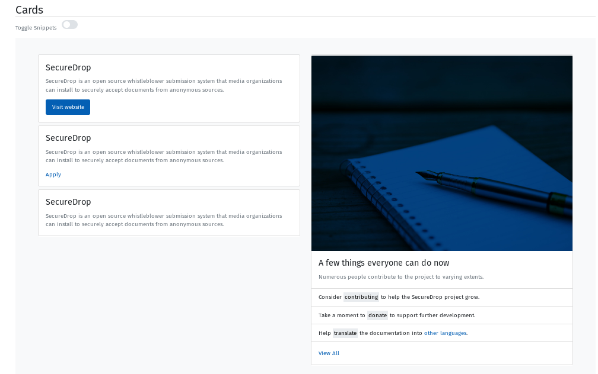
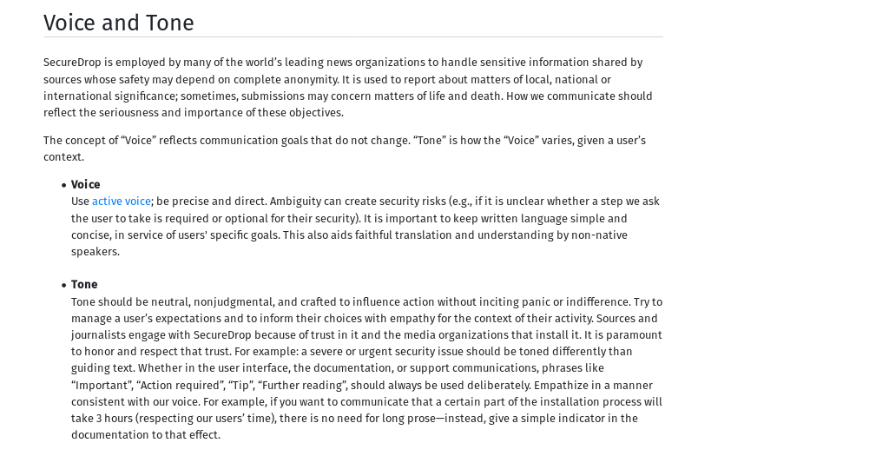
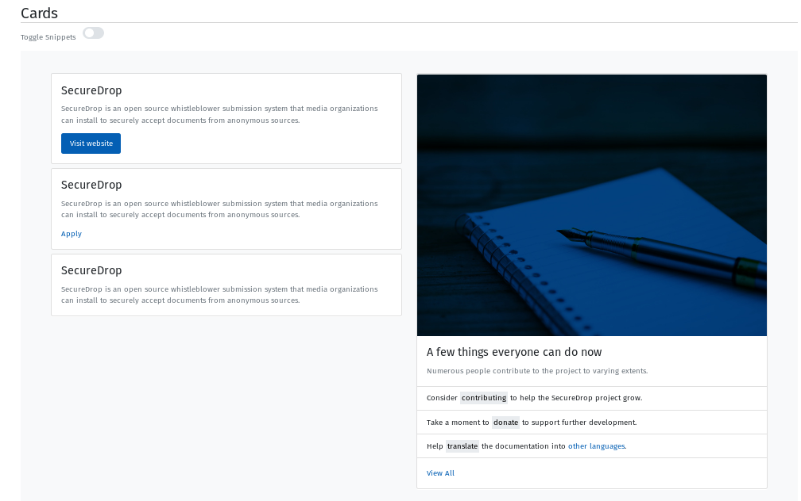
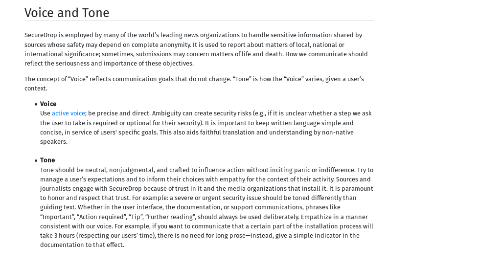

SecureDrop is an open source whistleblower submission system that media organizations can install to securely accept documents from anonymous sources.
SecureDrop is employed by many of the world’s leading news organizations to handle sensitive information shared by sources whose safety may depend on complete anonymity. It is used to report about matters of local, national or international significance; sometimes, submissions may concern matters of life and death. How we communicate should reflect the seriousness and importance of these objectives.
Date
October, 2018
Clients
Category
Style Guide
Blogpost
Sources
 Identihub
IdentihubWebsite